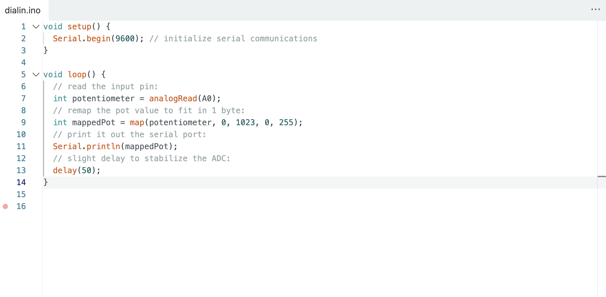
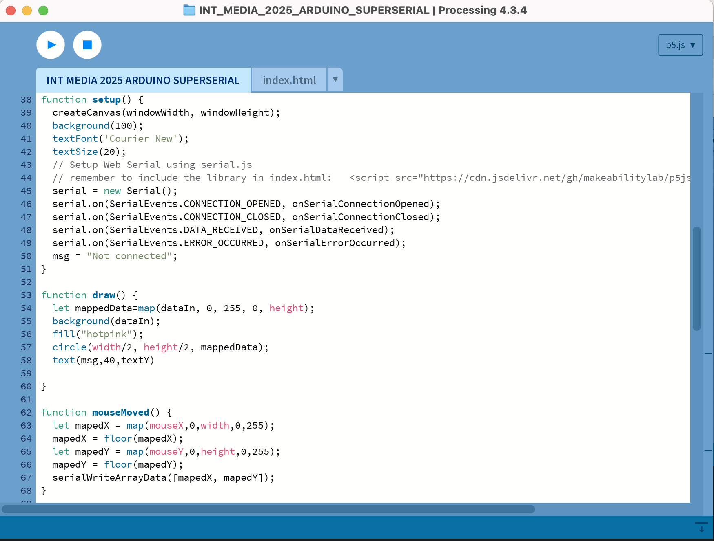
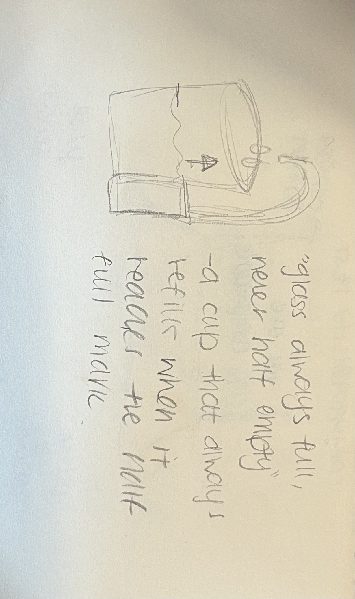

<week nine reflection> <p> Week Nine was super exciting. Suddenly everything makes sense and everything seems so fun. Being able to connect that bridge between physical computation and web design is so thrilling. WOMEN IN MALE DOMINATE FIELDS!!!! I adore being taught these things by two strong women in the field. Life is so great. Computing is so fun. What a privilege it is to have access to these resources. </p>
<activities>
<h3> i love pink!!!!! </h3> <p> This activity was so fun and unlocked a new level of possibilities for us. We took the potentiometer circuit even further and connected it to p5.js using Web Serial. The data from the Arduino was mapped visually by the potentiometer which controlled the moving pink circle on the screen. Bridging the gap between hardware and the browser was so exciting and opened up doors to so many ideas and computations. This activity was realllyyy insightful into the concept of "talking" between code and physical systems. </p> <video> </video> <h3> hey girl i see you </h3> <p> This was the same activity as above put instead of a circle, we implemented the video capture! </p> <video> </video> <image>

<image>

</image> <h3> chindogu sketch </h3> <p> For our Chindogu prompt, I designed a self-refilling cup that activates whenever it detects the water has dropped below halfway. This idea came into fruition from the idea around a glass being "half full or half empty". It's a little bit impractical but plays into the concept of constantly filling one's cup. It's almost cute in a way that you will always have an abundant amount of water, like the machine is looking out for you. </p> <image>

<research>
<h3> Pulsu(m) Plantae by Leslie Garcia </h3> <p> Pulsu(m) Plantae is a project by Leslie Garcia, which explores plant biofeedback as a source for generative sound and data. She uses electrodes connected to living plants and reads their electrophysiological signals and translates those signals into real-time sound and visuals through an Arduino based system and software. The project highlights a super interesting intersection of biology, ecology, and computational art, offering a way to “listen” to nonhuman life. Garcia's work really made me think about what data can be collected from nonhuman things and how they can be computed into a comprehensive application. I think her ability to bridge a gap between nonhuman objects into a controllable data visualisation is incredibly riveting and highlights the potential of physical computation as a tool. </p> <image src = "https://lessnullvoid.cc/pulsum/"> </image> <h3> LAUREN by Lauren McCarthy </h3> <p> In LAUREN, Lauren McCarthy turns herself into a human smart home assistant, offering real-time emotional and domestic support to people in their homes. Over a live connection, she controls lights, locks, music, and appliances based on voice commands, but also inserts personal commentary, emotional labour, and surveillance into the experience. Her performance art critiques the power dynamics and intimacy we’ve come to accept in technology-driven environments. LAUREN helped conceptualise a way technology can act as a human form, which will really inspire my final project. Her work highlights how any sort of interactive computation can be political, emotional or performative. It's super intriguing to see how serial communication can go beyond just input and output but also become a social gesture and intertwine itself into human dynamics. </p> <image src = "https://lauren-mccarthy.com/LAUREN"> </image>
</body>
</html>